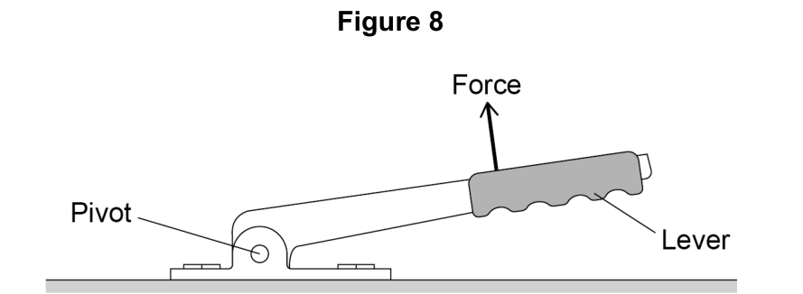
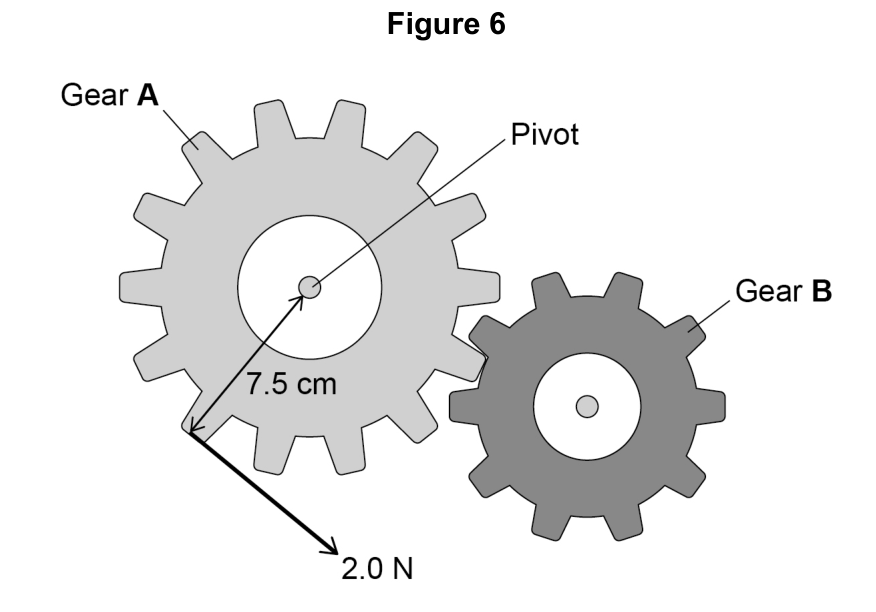
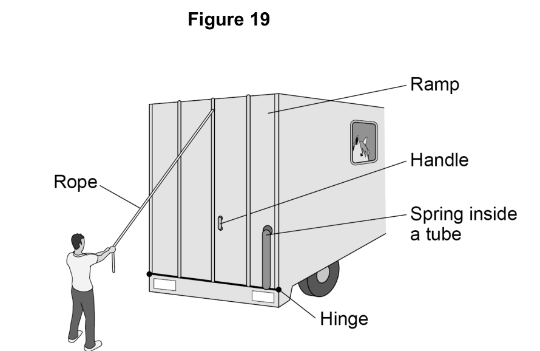

Explore · Science · from first principles
Seven short rooms, from "why is the door handle there?" to balancing a see-saw and explaining a lever the way AQA marks it. About two sessions of 15 minutes (rooms 1–4, then 5–7). Predict first, then try it.
Room 1 of 7
In Forces from scratch forces pushed things along. But push a door, turn a spanner, or sit on a see-saw, and the force makes something turn around a fixed point.
That fixed point is the pivot (the turning point). For a door, the pivot is the hinge.
You want to open a heavy door with the smallest push you can. Where do you push?
The push is always 20 N. Only where you push changes. Watch the curved arrow: that's the turning effect. Slide right to the hinge and it vanishes.
Some cars have a lever that is used to apply the handbrake.
Figure 8 shows the handbrake lever in a car.

The driver applies the force shown in Figure 8. The force produces a moment about the pivot.
How could the driver increase the moment about the pivot without increasing the size of the force?
Before you go on: in class you did an experiment with moments and a turning point. What did you do, and what do you think it was testing? Any guess is fine. You'll come back to it.
Room 2 of 7
A moment depends on two things: how big the force is, and how far from the pivot it acts. Multiply them:
moment = force × distance
M = F × d
Find two different ways to make a moment of 10 N m. Double the distance: what happens to the moment?
A force of 40 N pushes on a spanner 0.25 m from the nut. What is the moment, in N m?
A force of 30 N pushes on a lever 20 cm from the pivot. What is the moment, in N m?
There are some toy gears on the front of the baby walker.
Figure 6 shows the gears.

The child applies a force to gear A.
This causes a moment about the pivot, so gear A rotates.
02.5 Write down the equation which links distance (d), force (F) and moment of a force (M).
02.6 The child applies a force of 2.0 N on gear A.
The perpendicular distance between the force and the pivot is 7.5 cm.
Calculate the moment of the force about the pivot.
Explain why a long spanner makes it easier to undo a tight nut. Use the words moment, distance and force.
Room 3 of 7
AQA always says perpendicular distance. Perpendicular means "at right angles". If you push at a slant, only part of your push helps the turning.
You pull on the end of a spanner, but straight along the spanner, away from the nut. What happens?
The spanner is 0.30 m long. The dashed line shows which way the force acts. The blue line is the shortest path from the nut to that line: it always meets it at a right angle. At 90° it's the whole 0.30 m, so the moment is biggest.
A door handle is pushed straight towards the hinge. Explain why the door doesn't open, however hard you push.
Room 4 of 7
A force has a direction, and so does a moment. It turns things one of two ways around the pivot: clockwise (the way clock hands go) or anticlockwise.
Look back at Figure 6 in Room 2. The 2.0 N force turns gear A anticlockwise.
Explain what happens to gear B when the child applies the force to gear A.
On a see-saw, a child sits on the left. Which way does their weight turn the see-saw? What would a second child have to do to stop it turning?
Room 5 of 7
This is your class experiment. When something is balanced (not turning), the clockwise and anticlockwise moments cancel out:
total clockwise moment = total anticlockwise moment
It's the same idea as balanced forces in Forces from scratch, but for turning.
A small child (300 N) sits 2 m from the middle of a see-saw. Their parent (600 N) sits on the other side. Where must the parent sit to balance it?
Find three different ways to balance it. Each time, check: is left weight × left distance the same as right weight × right distance?
A metre rule is balanced on a pivot at its middle. A 2 N weight hangs 0.30 m to the left of the pivot. Where must a 3 N weight hang on the right to balance it? Give the distance in m.
Now explain your class experiment properly. What were you measuring, and what rule were you testing? Use the words clockwise, anticlockwise and balanced.
Room 6 of 7
"Explain why it's easier" questions about levers always have the same chain: bigger distance → same moment needs less force. Tap the links in order.
Figure 19 shows the back of a lorry. The lorry is used to carry horses.

The ramp is lowered by pulling on the rope or by pulling on the handle.
The hinge acts as a pivot.
Explain why it is easier to lower the ramp by pulling on the rope rather than pulling on the handle.
Tap the first link.
Write your answer to the lorry question in full sentences, without looking at the chain. Join the links with so and because.
Tick each point your answer makes. One mark each.
The second mark only counts if you got the first: "smaller force" on its own scores 0. AQA also gives both marks for "a smaller force is required at the rope to produce the same moment". Missed a link? Add it to your answer now.
Which link was hardest to remember? Which room explains it?
Room 7 of 7
The whole journey in one line: a force can turn things around a pivot → moment = force × perpendicular distance (N m) → each moment is clockwise or anticlockwise → balanced means clockwise moments = anticlockwise moments → bigger distance means less force for the same moment.
You didn't write anything in Room 1. That's fine.
Write today's "What I learned" sentence again, properly this time: what is a moment, how do you calculate it, and what does it tell you about the experiment you did? One or two sentences.
Ask someone at home: "Why is it easier to push a door at the handle than near the hinge?" Say the chain without looking. If you miss a link, they say "and so…?"